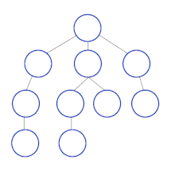

Programación Competitiva
¿Que es?
Algoritmos base
Estructuras principales
Grafos
Segment Tree
Competencias
Que es?
La programación competitiva ("Competitive Programming" en ingles) es un tipo de deporte mental que involucra
a los participantes en la resolución
de problemas de codificación utilizando sus habilidades en programación y
conocimiento de las disciplinas de CS, como algoritmos y estructuras de datos.
Los participantes de dichas competiciones, también llamados programadores
deportivos, necesitan escribir código bajo diversas restricciones y de acuerdo
con las especificaciones proporcionadas. Para ganar, un programador deportivo
debe idear el código que sería una solución a la tarea proporcionada.
El ganador se declara en función de una serie de criterios,
como el tiempo empleado, la calidad del código final, el tiempo de ejecución,
el tamaño del programa, etc.
Muchas grandes empresas tecnológicas, como Google, Facebook, Amazon,
Microsoft y otras. , apoyar la programación competitiva y participar en la
organización de competiciones, al mismo tiempo que contrata programadores
deportivos talentosos. El Concurso Internacional de Programación Universitaria
(ICPC), que se originó en la década de 1970, se conoce como la competencia
de programación competitiva más antigua.
Algoritmos base
Hay un par de algoritmos que son necesarios entender para empezar
a programar competitivamente. Uno de ellos es la Busqueda Binaria,
la cual nos permite numeros en una lista ordenada. La misma funciona asi:
- Se encuentra el punto medio de la lista "actual"
- Si la mitad es mas grande que el numero que buscamos, significa que
todos los numeros a la derecha no nos sirve, por lo que movemos
el fin de la lista a la posicion donde estamos
- Si la mitad es mas chica que el numero que buscamos, significa que
todos los numeros a la izquierda no sirven, por lo que movemos
el inicio de la lista a la posicion donde estamos
- Si el numero es igual al que buscamos, ya lo encontramos, rompemos ciclo
- Repetir proceso hasta que se encuentre o la diferencia
entre inicio y fin sea menor a 1
Otros algoritmos importantes son los de
ordenación (bubble sort, merge sort, etc),
los de combinatorias, y otros mas.
Estructuras principales
Stack
La primera estructura a analizar es el Stack. Esta es una estructura LIFO
(Last In First Out) que significa que el ultimo dato en entrar sera el primero
en salir. Stack en español es pila, y esta estructura funciona como una pila
de libros si asi se quiere ver, que solo se puede sacar el ultimo dato que
pusimos.
Queue
La siguiente estructura a ver es la Queue, o cola en español.
Esta es de tipo FIFO (First In First Out) que significa que el primer dato
en entrar sera el primero en salir, tal como en una cola de supermercado,
donde la primera persona que ingresa es la primera en luego salir.
Priority Queue
Un tipo de estructura muy util a la hora de ejecutar algoritmos es
la Priority Queue (PQ abreviado) o cola de prioridad. La misma si bien
comparte nombre con la queue, funciona algo diferente, ya que en vez de
devolver el primer dato ingresado a la cola de los disponibles, devuelve
el de mas alto valor. Una estrategia para usarlo al reves (es decir,
que devuelva el dato con menor valor) es insertarle los datos con
un valor negativo.
Vector
El vector o array dinámico es una estructura vital a la hora de programar.
El mismo es una lista a la que podemos agregarle, quitarle o modificarle
valores con mucha facilidad. Estos son 0-indexed, es decir,
el primer dato se encuentra en el indice [0], no en el 1.
Grafos
Un grafo es una composición de un conjunto de objetos conocidos
como nodos que se relacionan con otros nodos(normalmente representados como circulos) a
través de un conjunto de conexiones conocidas como aristas(normalmente representados como flechas o lineas).
Estos permiten estudiar relaciones entre unidades que interactuan con otras.
Los mismos cuentan con algoritmos como DFS, BFS, Dijkstra y otros,
que seran explicados a continuación.
Tipos de Grafos
Existen distintas formas de clasificar grafos. Algunas son por como son sus aristas.
Si son flechas que tienen direccion se llaman grafos dirigidos, pero si la aristas
es bidireccional, es decir, conecta el nodo 1 al 2 y viceversa, será no direccionado.
Tambien las aristas pueden tener "costo" o "Peso". Dependiendo de si lo tienen o no,
el grafo será
ponderado o no.
DFS

El algoritmo DFS (Depth-First Search) hace una busqueda, como bien indica su nombre,
en profundidad. Además, es un algoritmo que suele ser recursivo. El mismo agarra un
nodo, busca su primer vecino y si no esta visitado, lo marca como tal, y visita el proximo vecino.
Si esta visitado, simplemente vuelve, y el algoritmo seguira con el segundo vecino del nodo analizandose,
asi hasta llegar al final y haber visitado todos los nodos de la componente. Este sirve principalmente
para saber si dos nodos estan conectados o no a través de algún camino.
BFS

El algoritmo BFS (Breath-First Search) cumple funciones similares al DFS, con algunas diferencias.
Lo que hace es procesar el nodo y agregar todos los vecinos que no hayan sido visitados
a la cola, para luego procesarlos. Lo bueno de este algoritmo es que no es recursivo,
y tambien sirve para almacenar las distancias entre los distintos nodos. Con este al igual
que con el DFS también podemos analizar si hay alguna conexion directa entre los nodos.
Dijkstra
Finalmente, uno de los algoritmos más usados (por ejemplo, se usa en Google Maps),
el Dijkstra. El mismo sirve para encontrar las menores distancias de "pesos" o "precios" en
grafos ponderados. Empieza procesando un nodo, visita todos los nodos y los
agrega a una Priority Queue, con el peso en negativo (asi agarra los menos pesados),
el cual luego dara el proximo nodo con su forma mas optima para llegar al mismo,
y asi se pueden definir todas las distancias desde un nodo principal hasta cada
uno de los otros. La representación grafica del video es muy util para entender lo que este algoritmo.
Segment Tree
Un Segment Tree (o arbol de segmentos, en Español) es una estructura que consiste de
un arbol binario el cual contiene algun dato sobre un vector (ya sea el mayor, menor,
suma, resta, etc) de un segmento, donde el nodo raiz o nodo 1 es el que contiene
el dato de todo el vector junto. Estos estan compuestos por hojas (los segmentos de tamaño 1),
padres, vectores donde se almacena desde donde y hasta abarca el nodo actual.
Este nos permite hacer consultas (tambien llamadas querys) y actualizaciones (o updates)
en tiempos logaritmicos, a diferencia de utilizar solo el vector, el cual ocupa O(n) de tiempo.
Competencias
Hay muchas competencias que tratan de poner a competir a los programadores
mas habilidosos. Las principales:
IOI
La Olimpiada Internacional Informática (IOI las siglas en inglés) es la competencia más
importante a nivel secundario, ya que es practicamente el Mundial de Programación.
Este se realiza desde 1989 con 4 alumnos seleccionados de mas de 80 paises distintos.
La ultima edición hasta el momento fue en 2023, ubicada en Szeged, Hungría.
OIA
La OIA (Olimpiada Informatica Argentina) es la competencia nacional de programación
de Argentina. La cual cuenta con su propio juez online OIAJ
el cual permite resolver y entregar problemas antiguos. La OIA consta de 3 instancias.
La primera es la Jurisdiccional, donde todos resuelven 4 problemas y los 2 mejores de cada jurisdicción y
todos los que superen el puntaje de corte (establecido por el jurado) pasarán automaticamente a la
siguiente ronda. Luego se da la instancia Nacional, en la cual los alumnos tendrán 3 problemas, y los 3 mejores de cada nivel
(o algunos mas, segun el jurado) recibirán sus respectivas medallas, además de una clasificacion directa a la Iberoamericana y
y al certamen selectivo. Finalmente, los que superaron las dos instancias anteriores llegan al certamen selectivo,
en el cual se enfrentan a 2 dias con 3 problemas cada uno, para decidir quienes representarán al país en la proxima IOI.
OII
La Olimpíada Iberoamericana de Informática (OII) es una
competencia de programación anual para jóvenes alumnos matriculados en un
colegio secundario de países de Iberoamérica. Los estudiantes compiten de
forma individual, con hasta quince estudiantes compitiendo de cada país
participante. La competencia tiene solo una ronda, que ocurre alrededor de
junio-julio de cada año, y se realiza online. Por lo general, a los
estudiantes se les dan cuatro problemas de naturaleza algorítmica, que ellos
tienen que resolver en cinco horas.
ICPC

El International Collegiate Programming Contest es un concurso de programación
algorítmica para estudiantes universitarios. Equipos de tres personas,
representando a su universidad, trabajan para resolver la mayor cantidad de
problemas del mundo real, fomentando la colaboración, la creatividad, la
innovación y la capacidad de desempeñarse bajo presión. A través del entrenamiento
y la competencia, los equipos se desafían entre sí para elevar el nivel de lo
posible.